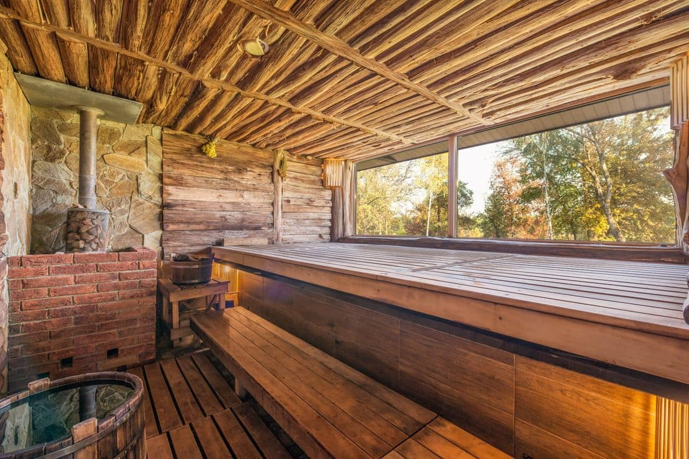
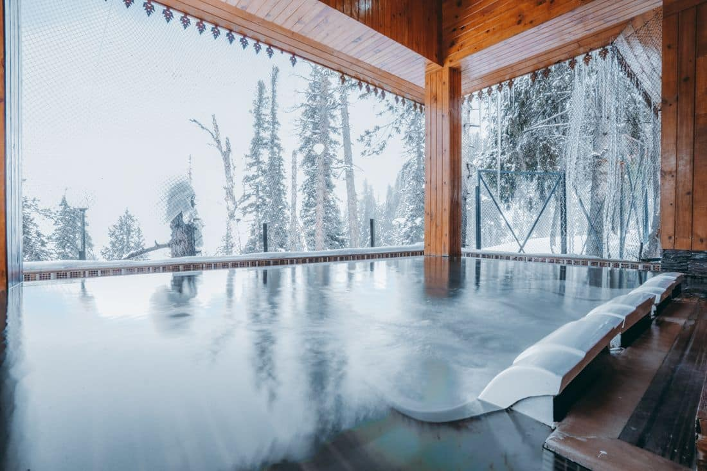
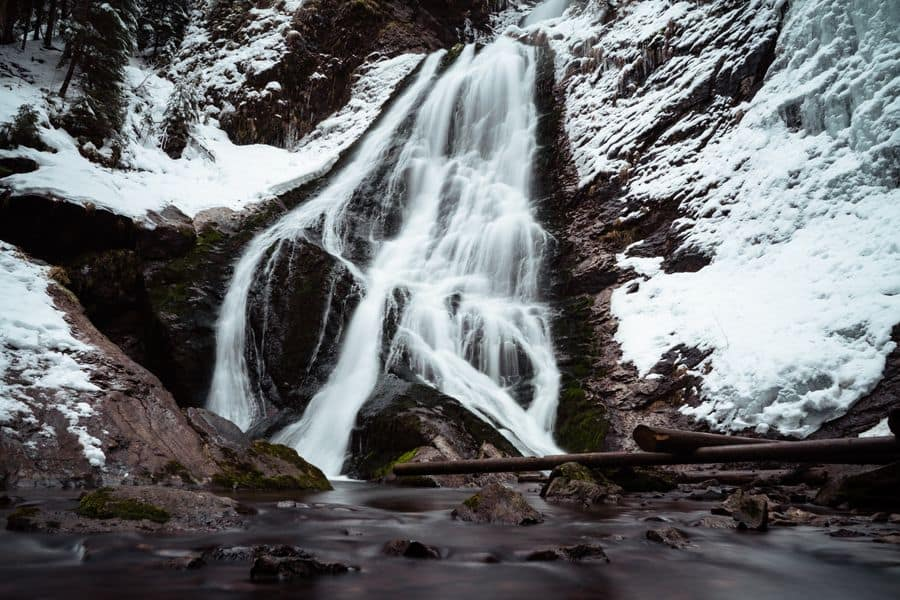
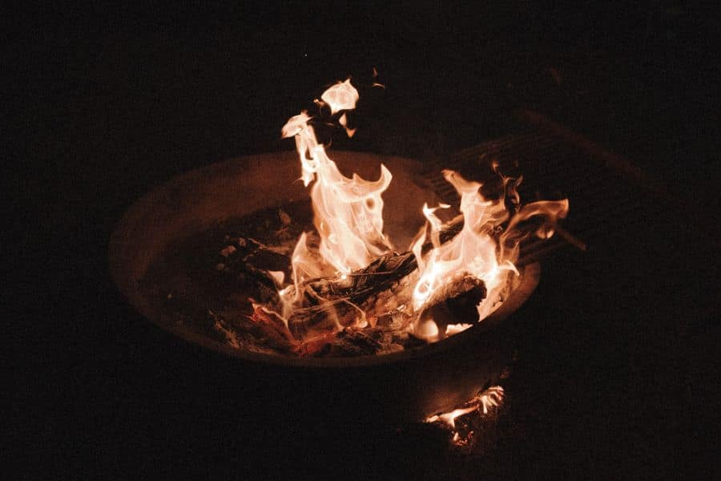
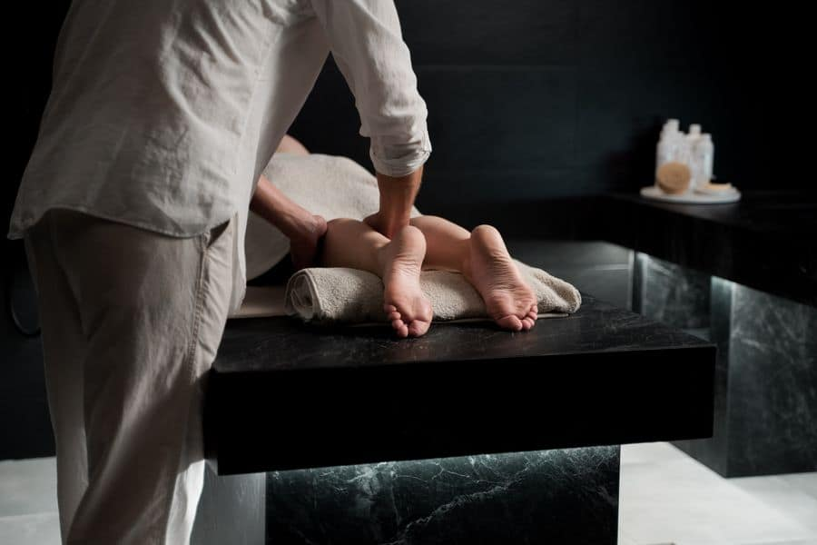

Quinze minutes de sauna
Le bois d'épinette, la vapeur sur les pierres, la chaleur qui descend dans les épaules. Le corps monte à 85 °C et les pensées ralentissent.
Sauna finlandais, chute froide et silence sous les étoiles, à 40 minutes de Montréal.
Le cycle thermique se répète trois fois. Chaque tour est plus facile que le précédent, et le sommeil qui suit ne ressemble à rien d'autre.
Le bois d'épinette, la vapeur sur les pierres, la chaleur qui descend dans les épaules. Le corps monte à 85 °C et les pensées ralentissent.
La chute nordique à 12 °C. Le souffle coupe, le cœur repart, la peau picote. C'est le moment que tout le monde redoute, puis redemande.
Enroulé dans une couverture près du foyer, le corps revient doucement à 36,9 °C. C'est là que la détente réelle commence.
Six espaces répartis dans la forêt, reliés par des sentiers chauffés. On circule en peignoir, sans se presser.

Un mur entier de verre donne sur la rivière gelée. 85 °C dedans, la forêt dehors.

Deux bassins extérieurs à 39 °C, ouverts jusqu'à 23 h les week-ends.

Eau de source à 12 °C. Dix secondes suffisent.
Hamacs, tisanes et chuchotements seulement.

Quatre feux entretenus du matin au soir.

Suédois, deep tissue ou pierres chaudes, en cabine simple ou double.
Dès la brunante, l'éclairage tombe à la lueur des feux et des lanternes. Par nuit claire, loin des lumières de la ville, il arrive que le ciel s'en mêle. Les habitués visent les soirées froides de janvier.
Le jeudi, c'est la soirée silence : aucune conversation sur tout le site, de 18 h à la fermeture.
Serviettes, peignoir et casier compris dans tous les forfaits. L'accès est limité en nombre : on ne vend jamais plus de places qu'il n'y a de chaises longues.
3 heures, en journée
58 $
De 16 h à la fermeture
88 $
La journée entière
148 $
Prix par personne, taxes en sus. Réservation fortement recommandée les week-ends d'hiver.
« On est arrivés stressés, on est repartis en silence. Trois heures qui valent une semaine de vacances. »
2180, chemin de la Rivière, Val-David. À 8 minutes du village, sortie 76 de l'autoroute 15. Stationnement gratuit, navette depuis la gare d'autobus les samedis.
Choisissez votre soirée, on garde votre chaise longue près du feu.
Réserver ma soiréeou appelez-nous : 819 555-0114